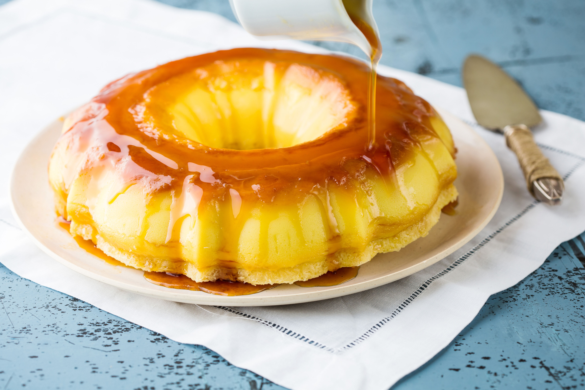

ESPERE!
faça de suas refeições uma maravilha
Não Feche Essa Página…
Torta SuíçaReceita de Torta Suíça deliciosa feita com açúcar, Leite MOÇA, coco fresco e queijo parmesão
Ingredientes
Calda
--1 xícara (chá) de açúcar
--meia xícara (chá) de água
Torta
--1 Leite MOÇA® (lata ou caixinha) 395 g
--meia xícara (chá) de açúcar
Conforme novas pessoas entram no programa e seguem o passo a passo
--1 xícara (chá) de farinha de trigo
--1 e meia xícara (chá) de coco fresco ralado 105 g
--1 xícara (chá) de queijo parmesão ralado 100 g
--8 ovos
--3 xícaras (chá) de leite
Modo de preparo

Calda
1 Em um recipiente refratário médio de bordas altas, coloque o açúcar e a água e leve ao microondas, em potência alta, por 5 minutos.
2 Retire o refratário, mexa e volte ao microondas, aquecendo de 30 segundos em 30 segundos até caramelizar, por até 2 minutos, sem deixar queimar.
3 Distribua a calda em uma forma com furo central (23 cm de diâmetro), própria para microondas, e reserve.
Torta
4 Em um liquidificador, bata todos os ingredientes até ficar homogêneo.
5 Transfira para a forma reservada e leve ao microondas, em potência alta, por 20 minutos.
6 Retire e deixe amornar.
7 Desenforme e leve à geladeira por cerca de 2 horas. Sirva.
ESPERE!Clique no botão abaixo e aduqiria o material com mais de 100 receitas deliciozas
De
R$ 97
por
R$6,90
SIM! QUERO MAIS RECEITAS
Veja tudo oque você recebera ao completar sua compra